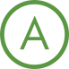

募集要項・FAQRecruitment / FAQ
Recruitment募集要項
会社説明会の参加者に対して採用選考を案内します。
※ミスマッチを防ぐため、選考に参加する方は会社説明会（採用セミナー）に必ず参加していただきます。
- 募集コースの
選択方法 エントリーシート提出時に選択
- 内々定までの
所要日数 2カ月程度
- 選考方法
エントリーシート・適性検査・面接
- 選考の特徴
選考でエントリーシートあり／選考で筆記・適性検査あり／
選考でグループワーク・グループディスカッションなし／グループ面接あり
人柄重視の選考ですので、面接でじっくりお話していただけます。- 提出書類
選考時：エントリーシート（My CareerBox）・履歴書
内定後：卒業（見込）証明書・成績証明書- 募集対象
理系学部生／文系学部生／短大生／既卒者
募集対象は2027年3月卒業見込の方、または卒業から3年以内の方。
総合職…四年制大学
限定職…四年制大学、短期大学- 募集人数
11～15名
- 募集学部・学科
全学部・全学科 学部・学科は問いません。
＜過去の採用実績＞
経済学部や経営学部、法学部、文学部、国際学部、
心理学部、農学部、スポーツ系学部など。
さまざまな学部卒の先輩が活躍中です。- 募集の特徴
総合職採用／一般職採用／エリア限定勤務（エリア限定職採用）あり／転居を伴う転勤なし
採用選考時、総合職／限定職を選択いただきます。
奈良県・京都府の事業所での勤務のため転居を伴う転勤はありません。- 職種
【総合職】
さまざまな仕事を経験しながら将来の管理職を目指すコース。
渉外業務・MA業務や窓口業務(預かり資産・保険販売含む)、本部での企画業務などの
専門性の高い仕事の他、金庫業務の全てを担当する可能性があります。【限定職】
限定された業務範囲でマニュアルに沿った仕事を行いながら担当分野のプロフェッショナルを目指すコース。
主な仕事は窓口業務・後方事務・融資事務・本部での事務などがあります。
また、管理職の指示のもと金融商品のセールスや電話セールスも行います。
限定職は昇進には上限があります。※コース転換制度あり。
- 初任給
合職・大卒（実績）／225,000円（月給）
限定職・大卒（実績）／215,000円（月給）
限定職・短大卒（実績）／179,000円（月給）
総合職・大卒（2026年度～ベースアップ予定）／240,000円（月給）
限定職・大卒（2026年度～ベースアップ予定）／230,000円（月給）
限定職・短大卒（2026年度～ベースアップ予定）／194,000円（月給）
※全職種ベースアップを予定試用期間3カ月 ※待遇に変化なし
固定残業制度なし- モデル月収例
奈良勤務（総合職）／扶養家族なし：240,000円（外勤手当・MA手当なし）
奈良勤務（限定職・大卒）／扶養家族なし：230,000円
※上記には残業代を含んでいません。- 諸手当
通勤交通費全額支給／扶養家族手当／外勤手当／MA手当／資格手当
各種手当の支給については金庫所定の条件があります。- 昇給
年1回（7月）
- 賞与
年2回（6月、12月）
- 年間休日数
121日
- 休日休暇
完全週休2日制(土・日)、祝日、年末年始(12／31～1／3)
有給休暇(初年度12日、以降勤続年数により最高20日)
連続休暇(5営業日連続)
計画休暇、メモリアル休暇
永年勤続慰労休暇(最大5日)
慶弔休暇、結婚休暇、産前産後休暇、育児休暇、介護休暇、看護休暇- 待遇・福利厚生・
社内制度 【制度】
各種社会保険（健康保険、厚生年金保険、信用金庫厚生年金基金、雇用保険、労災保険）
健康診断／財形貯蓄制度／職員融資制度／勤続表彰制度／退職金制度／福利厚生カフェテリアプラン
産休・育休・育児短時間制度、介護休暇【施設】
会員制リゾートホテル- 就業場所における
受動喫煙防止の取組 敷地内すべて禁煙
屋内禁煙- 勤務予定地
【京都】 【奈良】
奈良県内14カ所（大和郡山市、奈良市、生駒市、天理市、生駒郡）、
京都府内1カ所（木津川市）に営業店があります。- 勤務時間
【変形労働時間制】
1ヵ月単位／実働37.6時間以内／週平均【通常営業日】8：40～17：10（実働7.5時間）19日(平均)／月
【月初営業日】8：40～18：10（実働8.5時間） 1日／月
【月末営業日】8：40～18：40（実働9.0時間） 1日／月- こんな学生に
会ってみたい 資格取得に積極的な人／学内活動の経験が豊富な人／学外活動の経験が豊富な人
／チームワークを重視する人／こだわりや探究心の強い人／とにかく負けず嫌いの人
／冷静に物事を判断できる人
採用フロー
- 当庫HP よりエントリー
- エントリー
- 履歴書送付
- 適性検査（WEB）
- 面接（一次）
- 面接（二次）
- 役員面接
- 内定
※状況により「面接（一次・二次）」が同時になる場合もあり。
- 応募方法
①履歴書 ②職務経歴書 の2点を下記までご郵送ください。
〒639-1082 奈良県大和郡山市南郡山町 529-6 奈良信用金庫 総合企画本部 中途採用担当 宛
※応募書類は採用不採用問わず返却いたしませんのでご了承ください。 ※応募上の個人情報は採用選考以外の目的には利用いたしません。- 選考方法
①書類選考 ②適性検査・面接
書類選考の上、合格された方には追って面接日時をご連絡いたします。- 仕事内容
渉外業務(法人・個人営業) ／融資業務／預かり資産業務／預金業務(窓口・後方事務)等
IT システム関連業務 (システム企画・運用)等- 応募資格
金融機関で実務経験のある方 ※銀行・信金・証券・生保 等 (第二新卒、U・I ターン歓迎)
金融機関で実務経験がある方もしくは同等の経験・能力を有する方- 雇用形態
正社員（試用期間3か月あり）
- 勤務時間
<通常日>8:40 ~ 17:10
<月 初>8:40 ~ 18:10 <月末>8:40 ~ 18:40- 勤務地
本店および支店
(大和郡山市、奈良市、生駒市、天理市、平群町、木津川市)- 休日休暇
完全週休二日制(土・日)、祝日、12 月 31 日~ 1 月 3 日
有給休暇(最大 20 日)、慶弔休暇、産前産後休暇、育児・介護
休業、子の看護休暇 他- 給与
経験、能力、年齢等を考慮の上、当金庫給与規定により決定
昇給:年 1 回(7 月)- 諸手当
通勤手当(公共交通機関:全額支給 / 車・バイク:ガソリン代支給)
家族手当(規定により支給)、資格手当- 賞与
年2回(6月・12月)
- 福利厚生
各種社会保険完備、退職金制度、職員融資制度、職員親睦会制度
福利厚生カフェテリアプラン、会員制リゾートホテル、 永年勤続表彰、資格取得褒賞金 他
採用フロー
- 当庫HP よりエントリー
- エントリー
- 履歴書送付
- 適性検査（WEB）
- 面接（一次）
- 面接（二次）
- 役員面接
- 内定
※状況により「面接（一次・二次）」が同時になる場合もあり。
- 応募方法
①履歴書 ②職務経歴書 の2点を下記までご郵送ください。
〒639-1082 奈良県大和郡山市南郡山町 529-6 奈良信用金庫 総合企画本部 中途採用担当 宛
※応募書類は採用不採用問わず返却いたしませんのでご了承ください。 ※応募上の個人情報は採用選考以外の目的には利用いたしません。- 選考方法
①書類選考 ②適性検査・面接
書類選考の上、合格された方には追って面接日時をご連絡いたします。- 仕事内容
渉外業務(法人・個人営業) ／融資業務／預かり資産業務／預金業務(窓口・後方事務)等
IT システム関連業務 (システム企画・運用)等- 応募資格
金融機関で実務経験のある方 ※銀行・信金・証券・生保 等 (第二新卒、U・I ターン歓迎)
金融機関で実務経験がある方もしくは同等の経験・能力を有する方- 雇用形態
正社員（試用期間3か月あり）
- 勤務時間
<通常日>8:40 ~ 17:10
<月 初>8:40 ~ 18:10 <月末>8:40 ~ 18:40- 勤務地
本店および支店
(大和郡山市、奈良市、生駒市、天理市、平群町、木津川市)- 休日休暇
完全週休二日制(土・日)、祝日、12 月 31 日~ 1 月 3 日
有給休暇(最大 20 日)、慶弔休暇、産前産後休暇、育児・介護
休業、子の看護休暇 他- 給与
経験、能力、年齢等を考慮の上、当金庫給与規定により決定
昇給:年 1 回(7 月)- 諸手当
通勤手当(公共交通機関:全額支給 / 車・バイク:ガソリン代支給)
家族手当(規定により支給)、資格手当- 賞与
年2回(6月・12月)
- 福利厚生
各種社会保険完備、退職金制度、職員融資制度、職員親睦会制度
福利厚生カフェテリアプラン、会員制リゾートホテル、 永年勤続表彰、資格取得褒賞金 他
FAQよくある質問

「会社説明会」→「エントリー(WEB履歴書提出)」→「WEB適性検査」→「１次面接(対面)」→「２次面接(対面)」→「役員面接(最終面接・対面)」→「内々定」の流れで選考させていただきます。
さまざまな年代のお客さまと接する機会が多い仕事となるため、「人と接することが好きな方」、「地域に貢献したい方」は大歓迎です。
当金庫の採用基準はあくまで人物重視です。面接では皆さんの個性・人柄をアピールしてください。
選考には全く影響ありません。実際にさまざまな学部・学科出身の方が活躍しています。
金融に関する知識は、入庫後の研修や業務を通じて身につけていただきます。
資格の有無による選考の有利不利はありません。仕事を行ううえで必要となる資格の取得については、教材の提供や対策講座の実施など合格に向けたサポート体制が整っていますので、ご安心ください。学生時代に努力して取得した資格などあれば、面接の場などでアピールしていただきたいと思います。
選考の際に、総合職と限定職をご選択いただきます。
入庫後の新入職員研修を経て、配属先を通知します。
配属先の決定にあたっては、内定者の自宅からの配属店舗までの通勤時間（おおむね１時間程度）や配属先の人員構成を踏まえて決定します。
転勤は職員の適材適所を考えて３～５年目途に行われます。ただし、当金庫は地域密着の金融機関であり、
営業地区が定められているため、転居などなく勤務していただけると思います。
入庫後は本部での新入職員研修のあと、営業店に配属されます。営業店では、同じ営業店の先輩職員が「コーチャー」としてフォローするので安心してください。預金業務、融資業務、窓口業務および渉外業務などに携わっていただき、適性やキャリアステップを踏まえたジョブローテーション行われます。
新入職員は６月末までの期間を原則定時退庫としています。
それ以降は繁忙期に残業になることもありますが、全体の残業時間の平均は30分～1時間／１日ですので、プライベートに充てる時間も十分にあります。
完全週休２日制(土日)であり、祝日および年末年始(12月31日～1月３日)も全て休日となります。そのほか、有休休暇(初年度１２日、以降勤続年数による最高２０日)、連続休暇制度(５営業日)、メモリアル休暇、永年勤続慰労休暇など様々な休暇制度があります。
育児休業制度があります。子供が１歳６か月に満たない場合、申請いただければ１歳６か月になるまでの期間で休職が可能です。
出産をされた方の多くが、産休利用後にこの育児制度を利用しており、出産する女性職員の2025年度は100％が職場復帰されています。
そして、育児休業取得中も職場との接点を持てるよう定期的にフォローがあり、子連れ参加可能の産後ケア(骨盤体操)等の開催や、小学校4年の始期に達するまでの子どもを養育するための短時間勤務制度なども設けています。
当庫ではこれらの制度を設け、そして取得しやすい環境を心がけています。
扶養家族手当、外勤手当、MA手当のほか、金庫指定の公的資格の取得に際して、その授業料やテキスト代などを補助する制度や、資格試験合格者に褒賞金を支給しております。職員のキャリアアップに向けた支援体制が構築されています。
野球部・テニス部・バトミントン部があり、好きなスポーツが楽しめます。どのクラブも年齢・性別問わずに和気あいあい活動しています。
このようなクラブ活動を通して職場以外ともコミュニケーションが図れます。
地域金融機関として金融機関本来の金融サービスの提供はもちろん、地域社会の一員として、寄付や協賛、共催、地域行事への参加、ボランティアとして参画しています。また、飲食店や小売店など地域企業と連携し、専用WEBページ「＃ならで買ーて」に店舗一覧と特典サービスの掲載、地域企業冊子「ならっぽ」を発行・SNSで地域のお店紹介を通じて金融機関の堅いイメージを払拭して、地域金融機関として地域のみなさまに身近に感じていただけるような活動を行っています。
事前にご連絡いただき、日程確認の上、受け付けることはできますが、繁忙期等においてはお断りする場合がございます。